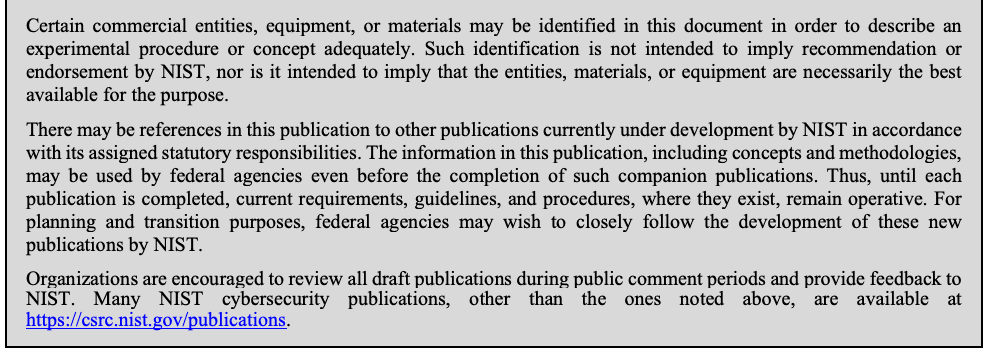
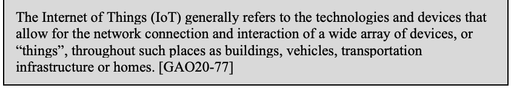

NIST IR 8379 日本語訳
英語タイトル : Summary Report for the Virtual Workshop Addressing Public Comment on NIST Cybersecurity for IoT Guidance日本語タイトル : NIST の IoT サイバーセキュリティガイダンスに対するパブリックコメントを扱う仮想ワークショップの概要報告書
公開日 : 2021-09-09
原文URL : https://csrc.nist.gov/pubs/ir/8379/final
翻訳編集 : 自動生成（有志による非公式の日本語訳）, 原文取得日 : 2026-10-31, 訳文 : 266 / 266 ブロック
[要約] NIST IR 8379 は、2021年4月22日に開催された仮想ワークショップで、デバイスのサイバーセキュリティに関する NIST Cybersecurity for IoT プログラムの取り組みに寄せられたフィードバックを要約した報告書です。NIST は、2020年12月に公開された NISTIR 8259D と SP 800-213 のパブリックドラフトについて、コミュニティの意見を議論し収集するため、このワークショップを開催しました。報告書は、全体セッションと、リスク記述子、システムおよびアーキテクチャーの記述子、IoT エコシステムを扱った三つの分科会セッションでの議論の概要と要点を示します。あわせて今後のステップを述べ、附属書で記述子の定義と頭字語を示しています。
NISTIR 8379
NISTIR 8379
Summary Report for the Virtual Workshop Addressing Public Comment on NIST Cybersecurity for IoT Guidance
NIST の IoT サイバーセキュリティガイダンスに対するパブリックコメントを扱う仮想ワークショップの概要報告書
Katerina N. Megas Michael Fagan David Lemire
Katerina N. Megas Michael Fagan David Lemire
This publication is available free of charge from:
本刊行物は次の URL から無料で入手できます:
https://doi.org/10.6028/NIST.IR.8379
https://doi.org/10.6028/NIST.IR.8379
NISTIR 8379
NISTIR 8379
Summary Report for the Virtual Workshop Addressing Public Comment on NIST Cybersecurity for IoT Guidance
NIST の IoT サイバーセキュリティガイダンスに対するパブリックコメントを扱う仮想ワークショップの概要報告書
Katerina N. Megas Michael Fagan Applied Cybersecurity Division Information Technology Laboratory
Katerina N. Megas Michael Fagan Applied Cybersecurity Division Information Technology Laboratory
David Lemire Huntington Ingalls Industries Annapolis Junction, MD
David Lemire Huntington Ingalls Industries Annapolis Junction, MD
This publication is available free of charge from:
本刊行物は次の URL から無料で入手できます:
https://doi.org/10.6028/NIST.IR.8379
https://doi.org/10.6028/NIST.IR.8379
September 2021
2021 年 9 月
U.S. Department of Commerce Gina M. Raimondo., Secretary
米国商務省 Gina M. Raimondo 長官
National Institute of Standards and Technology James K. Olthoff, Performing the Non-Exclusive Functions and Duties of the Under Secretary of Commerce for Standards and Technology & Director, National Institute of Standards and Technology
国立標準技術研究所 James K. Olthoff、商務次官（標準・技術担当）兼国立標準技術研究所所長の非専属的な職務および任務を代行
National Institute of Standards and Technology Interagency or Internal Report 8379 27 pages (September 2021)
米国国立標準技術研究所 省庁間報告書または内部報告書 8379 全 27 ページ（2021 年 9 月）
This publication is available free of charge from: https://doi.org/10.6028/NIST.IR.8379
本刊行物は次の URL から無料で入手できます: https://doi.org/10.6028/NIST.IR.8379
Certain commercial entities, equipment, or materials may be identified in this document in order to describe an experimental procedure or concept adequately. Such identification is not intended to imply recommendation or endorsement by NIST, nor is it intended to imply that the entities, materials, or equipment are necessarily the best available for the purpose.
原本PDFの抜粋画像

実験の手順や概念を適切に説明するため、本文書では特定の商業団体、機器、材料に言及している場合があります。こうした言及は、NIST による推奨や推薦を意味するものではなく、それらの団体、材料、機器がその目的に最適であることを意味するものでもありません。
There may be references in this publication to other publications currently under development by NIST in accordance with its assigned statutory responsibilities. The information in this publication, including concepts and methodologies, may be used by federal agencies even before the completion of such companion publications. Thus, until each publication is completed, current requirements, guidelines, and procedures, where they exist, remain operative. For planning and transition purposes, federal agencies may wish to closely follow the development of these new publications by NIST.
本刊行物では、NIST が法令上の責務に従って現在策定中の他の刊行物に言及している場合があります。本刊行物の情報（概念や方法論を含む）は、そうした関連刊行物の完成前であっても、連邦機関が使用してかまいません。したがって、各刊行物が完成するまでは、現行の要件、ガイドライン、手順が存在する場合、それらが引き続き有効です。計画および移行のため、連邦機関は、NIST によるこれらの新しい刊行物の策定状況を注意深く追うことを検討してもよいです。
Organizations are encouraged to review all draft publications during public comment periods and provide feedback to NIST. Many NIST cybersecurity publications, other than the ones noted above, are available at https://csrc.nist.gov/publications.
組織は、公開意見募集の期間中にすべてのドラフト刊行物を確認し、NIST にフィードバックを提供することが推奨されます。上記以外にも、NIST の多くのサイバーセキュリティ刊行物が https://csrc.nist.gov/publications で入手できます。
Comments on this publication may be submitted to:
本刊行物へのコメントの送付先:
National Institute of Standards and Technology Attn: Applied Cybersecurity Division, Information Technology Laboratory 100 Bureau Drive (Mail Stop 2000) Gaithersburg, MD 20899-2000 Email: iotsecurity@nist.gov
National Institute of Standards and Technology Attn: Applied Cybersecurity Division, Information Technology Laboratory 100 Bureau Drive (Mail Stop 2000) Gaithersburg, MD 20899-2000 電子メール: iotsecurity@nist.gov
All comments are subject to release under the Freedom of Information Act (FOIA).
すべてのコメントは、情報自由法（FOIA）に基づく公開の対象となります。
Reports on Computer Systems Technology
コンピューターシステム技術に関する報告書
The Information Technology Laboratory (ITL) at the National Institute of Standards and Technology (NIST) promotes the U.S. economy and public welfare by providing technical leadership for the Nation’s measurement and standards infrastructure. ITL develops tests, test methods, reference data, proof of concept implementations, and technical analyses to advance the development and productive use of information technology (IT). ITL’s responsibilities include the development of management, administrative, technical, and physical standards and guidelines for the cost-effective security and privacy of other than national security-related information in federal information systems.
米国国立標準技術研究所（NIST）の情報技術研究所（ITL）は、国の測定・標準のインフラストラクチャーに対する技術的リーダーシップを提供することで、米国の経済と公共の福祉を促進しています。ITL は、情報技術（IT）の開発と生産的な利用を推進するため、テスト、テスト方法、参照データ、概念実証の実装、技術分析を開発しています。ITL の責務には、連邦情報システムにおける国家安全保障に関係しない情報について、費用対効果の高いセキュリティとプライバシーのための、管理面、運用面、技術面、物理面の標準およびガイドラインの策定が含まれます。
Abstract
概要
This report summarizes the feedback received on the work of the NIST Cybersecurity for IoT program on device cybersecurity at a virtual workshop conducted April 22, 2021. NIST conducted the “Workshop Addressing Public Comment on NIST Cybersecurity for IoT Guidance” to discuss and gather community input on the December 2020 public drafts of NISTIR 8259D, Profile Using the IoT Core Baseline and Non-Technical Baseline for the Federal Government, and SP 800-213, IoT Device Cybersecurity Guidance for the Federal Government: Establishing IoT Device Cybersecurity Requirements. This publication provides a summary of the workshop.
本報告書は、2021 年 4 月 22 日に開催された仮想ワークショップで寄せられた、デバイスのサイバーセキュリティに関する NIST Cybersecurity for IoT プログラムの取り組みへのフィードバックを要約したものです。NIST は、2020 年 12 月に公開された NISTIR 8259D『Profile Using the IoT Core Baseline and Non-Technical Baseline for the Federal Government』と SP 800-213『IoT Device Cybersecurity Guidance for the Federal Government: Establishing IoT Device Cybersecurity Requirements』のパブリックドラフトについて、コミュニティの意見を議論し収集するため、「Workshop Addressing Public Comment on NIST Cybersecurity for IoT Guidance」を開催しました。本刊行物は、このワークショップの概要を示します。
Keywords
キーワード
Cybersecurity baseline; Internet of Things (IoT); securable computing devices; security requirements; Risk Management Framework; federal profile.
Cybersecurity baseline; Internet of Things (IoT); securable computing devices; security requirements; Risk Management Framework; federal profile.
Acknowledgments
謝辞
The authors wish to thank all contributors to this publication, including the participants in workshops and other interactive sessions; the individuals and organizations from the public and private sectors, including manufacturers from various sectors as well as several manufacturer trade organizations, who provided feedback on the preliminary public content and colleagues at NIST who offered invaluable inputs and feedback.
著者らは、ワークショップやその他の対話型セッションの参加者、予備的な公開コンテンツにフィードバックを寄せてくださった、さまざまな分野の製造者や複数の製造者業界団体を含む官民の個人および組織、そして貴重な意見とフィードバックを提供してくれた NIST の同僚を含め、本刊行物に貢献したすべての方々に感謝します。
Audience
想定読者
The main audiences for this publication are IoT device manufacturers and federal agencies procuring IoT devices. This publication may also help IoT device customers or integrators, particularly those that work in or with the federal government.
本刊行物の主な対象読者は、IoT デバイスの製造者と、IoT デバイスを調達する連邦機関です。本刊行物は、IoT デバイスの顧客やインテグレーター、特に連邦政府内で、または連邦政府と連携して業務を行う顧客やインテグレーターにも役立つ場合があります。
Table of Contents
目次
1 Introduction
1 はじめに
On April 22, 2021, the National Institute of Standards and Technology (NIST) conducted a virtual workshop entitled Workshop Addressing Public Comment on NIST Cybersecurity for IoT Guidance. The event included stakeholders from across industry, academia, and government. The goal was to discuss feedback NIST had received on two draft documents:
2021 年 4 月 22 日、米国国立標準技術研究所（NIST）は、Workshop Addressing Public Comment on NIST Cybersecurity for IoT Guidance と題するオンラインワークショップを開催しました。このイベントには、産業界、学術界、政府の関係者が参加しました。その目的は、NIST が 2 つのドラフト文書について受け取ったフィードバックを検討することでした。
•NIST Special Publication (SP) 800-213, IoT Device Cybersecurity Guidance for the Federal Government: Establishing IoT Device Cybersecurity Requirements [SP800-213]
•NIST Special Publication (SP) 800-213『IoT Device Cybersecurity Guidance for the Federal Government: Establishing IoT Device Cybersecurity Requirements』[SP800-213]
•NIST Interagency Report (NISTIR) 8259D, Profile Using the IoT Core Baseline and Non-Technical Baseline for the Federal Government [NISTIR 8259D]
•NIST Interagency Report (NISTIR) 8259D『Profile Using the IoT Core Baseline and Non-Technical Baseline for the Federal Government』[NISTIR 8259D]
Both drafts were published in December 2020, with a public comment period extending through February 26, 2021. Over 230 people participated from the U.S. and nine other countries, representing a broad mix of industry, academia, and government..
両ドラフトは 2020 年 12 月に公開され、パブリックコメント期間は 2021 年 2 月 26 日まで続きました。米国と他の 9 か国から 230 人を超える人々が参加し、産業界、学術界、政府の幅広い層を代表していました。
1.1 About the NIST Cybersecurity for the Internet of Things Program
1.1 NIST Cybersecurity for the Internet of Things プログラムについて
The mission of the NIST Cybersecurity for the Internet of Things (IoT) Program [3] is to cultivate trust in the IoT and foster an environment that enables innovation on a global scale through standards, guidance, and related tools developed in collaboration with stakeholders across government, industry, international bodies, and academia1. The NIST Cybersecurity for IoT Program supports the development and application of standards, guidelines, and related tools to improve the cybersecurity of connected devices and the environments in which they are deployed.
NIST Cybersecurity for the Internet of Things (IoT) プログラム [3] の使命は、政府、産業界、国際機関、学術界のステークホルダーとの協働で開発される標準、ガイダンス、関連ツールを通じて、IoT への信頼を醸成し、世界規模でのイノベーションを可能にする環境を育むことです1。NIST Cybersecurity for IoT プログラムは、接続されたデバイスと、それらが展開される環境のサイバーセキュリティを向上させるための標準、ガイドライン、関連ツールの開発と適用を支援します。
1.2 Background
1.2 背景
In December 2020 NIST published public drafts of four IoT cybersecurity documents:
2020 年 12 月、NIST は IoT サイバーセキュリティに関する 4 つの文書のパブリックドラフトを公開しました。
•NIST SP 800-213, IoT Device Cybersecurity Guidance for the Federal Government: Establishing IoT Device Cybersecurity Requirements
•NIST SP 800-213『IoT Device Cybersecurity Guidance for the Federal Government: Establishing IoT Device Cybersecurity Requirements』
•NISTIR 8259B, IoT Non-Technical Supporting Capability Core Baseline [NISTIR8259B]
•NISTIR 8259B『IoT Non-Technical Supporting Capability Core Baseline』[NISTIR8259B]
•NISTIR 8259C, Creating a Profile Using the IoT Core Baseline and Non-Technical Baseline [NISTIR8259C]
•NISTIR 8259C『Creating a Profile Using the IoT Core Baseline and Non-Technical Baseline』[NISTIR8259C]
•NISTIR 8259D, Profile Using the IoT Core Baseline and Non-Technical Baseline for the Federal Government
•NISTIR 8259D『Profile Using the IoT Core Baseline and Non-Technical Baseline for the Federal Government』
These documents build on the previously published NISTIR 8259, Recommendations for IoT Device Manufacturers: Foundational Activities [NISTIR8259], and NISTIR 8259A, IoT Device Cybersecurity Capability Core Baseline [NISTIR 8259A], to define a federal profile for IoT device cybersecurity that encompasses both technical abilities and non-technical supporting capabilities required from IoT devices and their manufacturers, respectively, as well as associated documentation to round out the guidance provided by the program. The documents are complemented by an online catalog [CATALOG] of detailed technical capabilities and supporting non-technical capabilities, updates that were published in March of 2021.
これらの文書は、以前に公開された NISTIR 8259『Recommendations for IoT Device Manufacturers: Foundational Activities』[NISTIR8259] および NISTIR 8259A『IoT Device Cybersecurity Capability Core Baseline』[NISTIR 8259A] を土台として、IoT デバイスに求められる技術的能力と、その製造者に求められる非技術的支援能力の両方を含む、IoT デバイスのサイバーセキュリティに関する連邦プロファイルを定義し、プログラムが提供するガイダンスを補完する関連文書を整えるものです。これらの文書は、詳細な技術的能力と、それを支援する非技術的能力を収録したオンラインカタログ [CATALOG] によって補完されています。このカタログの更新版は、2021 年 3 月に公開されました。
The Internet of Things Cybersecurity Improvement Act of 20202 became law in December 2020. The law directs NIST to publish “standards and guidelines for the Federal Government on the appropriate use and management by agencies of Internet of Things devices owned or controlled by an agency and connected to information systems owned or controlled by an agency, including minimum information security requirements for managing cybersecurity risks associated with such devices.” The NISTIR 8259 series and SP 800-213 represent a significant portion of NIST’s activities to address the requirements of the Act.
Internet of Things Cybersecurity Improvement Act of 20202 は、2020 年 12 月に法律として成立しました。この法律は、NIST に対し、「機関が所有または管理し、機関が所有または管理する情報システムに接続されている Internet of Things デバイスの、機関による適切な使用と管理に関する、連邦政府向けの標準およびガイドライン（そうしたデバイスに関連するサイバーセキュリティリスクを管理するための最小限の情報セキュリティ要件を含む）」を公開するよう指示しています。NISTIR 8259 シリーズと SP 800-213 は、同法の要件に対応するための NIST の活動の重要な部分を占めます。
After the draft documents were published, NIST began a series of stakeholder engagement activities. The April 2021 workshop was an open event to engage stakeholders in focused discussions on two of the draft documents: NIST SP 800-213 and NISTIR 8259D, which are the core documents defining federal requirements and processes for IoT device cybersecurity.
ドラフト文書の公開後、NIST は一連のステークホルダーエンゲージメント活動を開始しました。2021 年 4 月のワークショップは、2 つのドラフト文書、すなわち NIST SP 800-213 と NISTIR 8259D（IoT デバイスのサイバーセキュリティに関する連邦の要件とプロセスを定義する中核的な文書）について、ステークホルダーが焦点を絞った議論を行うための公開イベントでした。
1.3 About the Workshop Addressing Public Comment on NIST Cybersecurity for IoT Guidance
1.3 NIST の IoT サイバーセキュリティガイダンスに対するパブリックコメントを扱うワークショップについて
The free, publicly available virtual workshop consisted of a mixture of plenary and breakout sessions3. The agenda is provided in Table 1. The workshop included a keynote presentation from the U.S. Government Accountability Office (GAO) describing their survey of federal use of IoT technology and an overview from the NIST Cybersecurity for IoT Program’s technical lead on potential responses to the comments NIST has received. These sessions were followed by breakout discussions on various aspects of NIST’s proposed approach to revising the documents. The plenary sessions resumed with an overview of NIST’s Online Informative References (OLIR) Program, followed by a summation of the breakout sessions provided by their facilitators and closing remarks from the NIST program manager.
無料で一般に公開された仮想ワークショップは、全体セッションと分科会セッションを組み合わせて構成されました3。議題は表 1 に示します。ワークショップには、連邦による IoT 技術の利用調査を説明する米国政府説明責任局（GAO）からの基調講演と、NIST Cybersecurity for IoT プログラムの技術リードによる、NIST が受け取ったコメントへの対応案の概要説明が含まれました。これらのセッションに続いて、文書を改訂するための NIST の提案アプローチのさまざまな側面について、分科会での議論が行われました。全体セッションは、NIST の Online Informative References (OLIR) プログラムの概要説明で再開し、続いてファシリテーターによる分科会セッションのまとめと、NIST プログラムマネージャーによる閉会の挨拶がありました。
This workshop focused on discussing themes raised in the comments submitted on the two subject documents, some of which will have implications across the entire set of documents. The goal of the workshop was to improve the documents to reflect federal government needs and stakeholder concerns. NIST sought to get additional input from stakeholders through the facilitated breakout discussions, bringing together different points of view around key topics that involved audience participation and questions.
このワークショップは、対象の 2 つの文書に寄せられたコメントで提起されたテーマ（その一部は文書群全体に影響を及ぼします）の議論に焦点を当てました。ワークショップの目標は、連邦政府のニーズとステークホルダーの懸念を反映するよう文書を改善することでした。NIST は、ファシリテーターが進行する分科会での議論を通じて、主要なトピックをめぐるさまざまな視点を集め、聴衆の参加や質問を伴う形で、ステークホルダーから追加の意見を得ようとしました。
NIST sought attendance from those involved in federal IoT cybersecurity, the manufacturers of IoT devices, researchers in related fields, and other stakeholders. NIST encouraged participants to become familiar with the draft documents prior to the workshop.
NIST は、連邦の IoT サイバーセキュリティに関わる人々、IoT デバイスの製造者、関連分野の研究者、その他のステークホルダーの参加を求めました。NIST は、参加者にワークショップの前にドラフト文書をよく理解しておくよう促しました。
The workshop drew approximately 230 participants, panelists, speakers, and moderators. This included representatives from:
ワークショップには、約 230 人の参加者、パネリスト、講演者、司会者が集まりました。参加者等には、次の組織・分野の代表者が含まれていました。
•A mixture of industry, academia, and government, as well as independent researchers;
•産業界、学術界、政府、および独立した研究者の混在
•Seventeen federal government organizations including civil government, defense, and intelligence; and
•文民政府、防衛、情報機関を含む 17 の連邦政府組織、および
•Nine countries.
•9 か国
Table 1 – Agenda for the IoT Federal Profile Virtual Workshop
表 1 – IoT 連邦プロファイル仮想ワークショップの議題
| Time | Activity and Presenters |
|---|---|
| 10:00 am | Welcome and introduction: Kat Megas, Program Manager, NIST Cybersecurity for IoT Program |
| 10:15 am | Keynote: “Federal Use of IoT: Insights into a Government-wide survey and Case Studies” – Eric Hudson and Steve Rabinowitz, GAO |
| 10:45 am | Overview of comment themes and paths forward for the documents – Michael Fagan, NIST |
| 11:30 am | Breakout 1: Risk-Based Approach: Assessing IoT Device Risk and Mitigation Approaches |
| 1:00 pm | Breakout 2: No One Size Fits All: Accounting for Device Architecture in applying the Federal Profile |
| 2:00 pm | Breakout 3: Ecosystem View: Mitigating Risks and Reducing Fragmentation Through Ecosystem Cybersecurity |
| 3:00 pm | NIST Online Informative Reference (OLIR) Program and Call for Informative References (Kevin Brady, NIST) |
| 3:30 pm | Facilitator panel and discussion |
| 3:50 pm | Conclusion (Kat Megas) |
| 時刻 | 活動と発表者 |
|---|---|
| 10:00 am | 歓迎と紹介: Kat Megas、NIST Cybersecurity for IoT プログラムマネージャー |
| 10:15 am | 基調講演: 「Federal Use of IoT: Insights into a Government-wide survey and Case Studies」 – Eric Hudson、Steve Rabinowitz（GAO） |
| 10:45 am | コメントのテーマの概観と文書の今後の進め方 – Michael Fagan（NIST） |
| 11:30 am | 分科会 1: リスクベースのアプローチ: IoT デバイスのリスクと緩和アプローチの評価 |
| 1:00 pm | 分科会 2: 万能の解はない: 連邦プロファイルの適用におけるデバイスアーキテクチャーの考慮 |
| 2:00 pm | 分科会 3: エコシステムの視点: エコシステムのサイバーセキュリティによるリスクの緩和と断片化の低減 |
| 3:00 pm | NIST Online Informative Reference (OLIR) プログラムと参考情報の募集（Kevin Brady、NIST） |
| 3:30 pm | ファシリテーターによるパネルと討議 |
| 3:50 pm | 閉会（Kat Megas） |
Videos of the workshop plenary sessions are available on the event web page.4 Based on the participant presentations and feedback collected from stakeholders, this report provides a summary of key points and a general discussion of possible follow-on activities for the program.
ワークショップの全体セッションの動画は、イベントのウェブページで公開されています。4 本報告書は、参加者の発表とステークホルダーから収集したフィードバックに基づき、主要な論点の概要と、プログラムの今後の活動の可能性についての全般的な議論を示します。
2 Event Summary and Key Takeaways
2 イベントの概要と主な要点
The summary below highlights significant points from the plenary presentations and identifies the discussion topics and NIST’s takeaways and observations from the three breakout sessions.
以下の概要は、全体セッションの発表から重要な点を取り上げ、3 つの分科会セッションの議論のトピックと、NIST の要点および所見を示します。
2.1 Plenary Sessions
2.1 全体セッション
This section provides an overview of the presentations and discussions during the workshop plenary sessions.
本節では、ワークショップの全体セッションでの発表と議論の概要を示します。
2.1.1 Introduction: NIST Cybersecurity for IoT Program Manager
2.1.1 はじめに: NIST Cybersecurity for IoT プログラムマネージャー
Katerina Megas, the program manager for the NIST Cybersecurity for the IoT Program, gave a brief introductory presentation. She thanked participants for attending, provided a summary of the agenda, and presented information on the NIST Cybersecurity for IoT Program. Ms. Megas reviewed the goals of the program and five principles that guide its execution. She emphasized the importance of risk management in NIST’s approach to IoT cybersecurity guidance, describing the view of the risk management hierarchy from enterprise down to systems, and then extending on to IoT devices that are components of federal information systems. Ms. Megas also pointed out that NIST guidance needn’t have “IoT” in the title to be applicable to IoT cybersecurity, noting that the NIST security controls contained in SP 800-53, and other guidance documents that address zero-trust architecture and supply chain security, among other topics, are also relevant and useful. She concluded by reminding participants that the workshop discussions were focused on cybersecurity for federal information systems, which guided the selection of topics in the agenda.
NIST Cybersecurity for the IoT プログラムのプログラムマネージャーである Katerina Megas が、簡単な導入の発表を行いました。彼女は参加者に出席への感謝を述べ、議題の概要を示し、NIST Cybersecurity for IoT プログラムに関する情報を紹介しました。Megas 氏は、プログラムの目標と、その実行を導く 5 つの原則を確認しました。彼女は、NIST の IoT サイバーセキュリティガイダンスのアプローチにおけるリスク管理の重要性を強調し、エンタープライズからシステムへ、さらに連邦情報システムの構成要素である IoT デバイスへと広がる、リスク管理の階層の見方を説明しました。Megas 氏はまた、NIST のガイダンスは、IoT サイバーセキュリティに適用できるために題名に「IoT」を含む必要はないと指摘し、SP 800-53 に含まれる NIST のセキュリティ管理策や、ゼロトラストアーキテクチャーやサプライチェーンセキュリティなどを扱う他のガイダンス文書も、関連があり有用であると述べました。彼女は、ワークショップの議論は連邦情報システムのサイバーセキュリティに焦点を当てており、それが議題のトピックの選定を方向づけたことを参加者に改めて伝えて、発表を締めくくりました。
2.1.2 Keynote: GAO Survey of Federal IoT Use
2.1.2 基調講演: GAO による連邦政府の IoT 利用調査
The keynote presentation was made by Eric Hudson and Steve Rabinowitz of the GAO, based on a GAO report titled Internet of Things: Information on Use by Federal Agencies [GAO20-577]. Mr. Hudson is a senior analyst with GAO’s physical infrastructure team. Mr. Rabinowitz is also a senior analyst at GAO and has participated in a number of infrastructure-related studies. Their presentation had three components:
基調講演は、GAO の Eric Hudson 氏と Steve Rabinowitz 氏が、Internet of Things: Information on Use by Federal Agencies [GAO20-577] と題する GAO の報告書に基づいて行いました。Hudson 氏は GAO の物理インフラストラクチャーチームの上級アナリストです。Rabinowitz 氏も GAO の上級アナリストで、インフラストラクチャーに関する多数の調査に参加してきました。2 人の発表は 3 つの部分で構成されていました。
•Mr. Hudson presented background information on the GAO and conduct of the study that was the basis for the report;
•Hudson 氏が、GAO の背景と、報告書の基となった調査の実施方法について説明しました。
•Mr. Rabinowitz reviewed the survey results from the study; and
•Rabinowitz 氏が、調査のアンケート結果を確認しました。
•Mr. Hudson described several interesting use cases that were explored in greater depth.
•Hudson 氏が、より深く調べた興味深いユースケースをいくつか説明しました。
Mr. Hudson described the GAO’s role as a non-partisan agency of Congress that does most of its study work on behalf of Congressional committees. He noted that the study they were presenting was performed at the request of four Senators. He described the focus of the study as being to identify the nature of federal agency use of IoT technology, review the benefits and challenges that agencies had experienced with the technology, and understand government-wide policies and agency-specific policies and guidance that inform their use of IoT and associated decision making. Mr. Hudson said the GAO combined a survey with four case studies to gain deeper insights, selecting the case studies based on a combination of agency information technology budgets, agency missions, and the specific use cases available. The use cases selected came from the Departments of Commerce (DOC) and Homeland Security (DHS), the Environmental Protection Agency (EPA), and the National Aeronautics and Space Administration (NASA). He said the GAO met with department-level and sub-agency staff and program management staff. The GAO also reached out to other agencies based on the survey results. He noted that the GAO used a specific definition of IoT to clarify the scope of their study with the agencies surveyed:
Hudson 氏は、GAO は議会の超党派機関であり、調査業務の大半を議会の委員会のために行っていると説明しました。発表する調査は、4 人の上院議員の要請により実施されたと述べました。彼は調査の焦点を、連邦機関による IoT 技術の利用の実態を特定すること、機関がその技術で経験した利点と課題を確認すること、IoT の利用と関連する意思決定に影響を与える政府全体の政策および機関固有の政策とガイダンスを理解することだと説明しました。Hudson 氏は、より深い洞察を得るため、GAO がアンケート調査と 4 件のケーススタディを組み合わせ、機関の情報技術予算、機関の任務、利用可能な具体的なユースケースを総合してケーススタディを選定したと述べました。選定されたユースケースは、商務省（DOC）、国土安全保障省（DHS）、環境保護庁（EPA）、米国航空宇宙局（NASA）から選ばれました。GAO は、省レベルおよび下位機関の職員、ならびにプログラム管理職員と面会しました。また、アンケート結果に基づいて他の機関にも連絡を取りました。GAO は、調査対象の機関との調査範囲を明確にするため、IoT の特定の定義を用いたと述べました。
The Internet of Things (IoT) generally refers to the technologies and devices that allow for the network connection and interaction of a wide array of devices, or “things”, throughout such places as buildings, vehicles, transportation infrastructure or homes. [GAO20-77]
原本PDFの抜粋画像

Internet of Things (IoT) とは一般に、建物、車両、交通インフラストラクチャー、住宅などの場所全体にわたる、多種多様なデバイス、すなわち「モノ」のネットワーク接続と相互作用を可能にする技術とデバイスを指します。[GAO20-77]
Mr. Rabinowitz then presented the results of the survey, which he described as a “shallow look” at how the federal government is using IoT technology, while providing a useful look at the extent of IoT use and the high-level benefits and challenges. He noted that the study excluded common IT products as well as smart devices that weren’t connected to an agency network, and he indicated that the types of IoT addressed by the survey included control or monitoring devices such as smart heating, ventilation and air conditioning (HVAC) and sensors that collect environmental data, fire suppression systems with IoT sensors, and network-connected telemetry devices (e.g., cameras). He explained that the survey was targeted to subcomponents of agencies and was sent to 115 federal entities that had been identified through their membership in the Federal Chief Information Officer (CIO) Council, with the survey addressed to the component’s CIO or senior IT executive.
次に Rabinowitz 氏が調査結果を発表しました。彼はそれを、連邦政府が IoT 技術をどのように利用しているかについての「浅い調査」としながらも、IoT 利用の程度と、高レベルの利点と課題を知るうえで有用だと述べました。彼は、調査が一般的な IT 製品や、機関のネットワークに接続されていないスマートデバイスを除外していたことに触れ、調査で扱った IoT の種類には、スマート空調（HVAC）や環境データを収集するセンサーなどの制御・監視デバイス、IoT センサー付きの消火システム、ネットワークに接続されたテレメトリデバイス（例: カメラ）が含まれていたと述べました。彼は、調査が機関の下位組織を対象としており、連邦最高情報責任者（CIO）評議会の構成員であることから特定された 115 の連邦組織に送付され、アンケートは各組織の CIO または上級 IT 幹部宛てであったと説明しました。
Regarding the extent of use and plans for use of IoT, the survey results were that:
IoT の利用の程度と利用計画に関する調査結果は、次のとおりでした。
•56 of 90 agencies were using IoT, especially to control or monitor systems, control access to facilities, and track physical assets (vehicles, property).
•90 機関のうち 56 機関が IoT を利用しており、特にシステムの制御や監視、施設へのアクセス制御、物理的資産（車両、財産）の追跡に利用していました。
•25 agencies were currently using IoT and planned to expand their use.
•25 機関が現在 IoT を利用しており、利用の拡大を計画していました。
•13 agencies were neither using nor planning to use IoT, based on lack of return on investment, internal administrative hurdles, or the lack of a business case.
•13 機関は、投資対効果の欠如、内部の事務的な障壁、またはビジネスケースの欠如を理由に、IoT を利用しておらず、利用の計画もありませんでした。
GAO’s survey results about the nature of IoT technology use indicated that 50 agencies were using commercial off-the-shelf products, while 17 were using more specialized, “home-grown” devices. An example of the latter was NASA’s use of custom IoT for monitoring space suits.
IoT 技術の利用の性質に関する GAO の調査結果では、50 機関が市販品を使用し、17 機関がより専門的な「自前開発」のデバイスを使用していました。後者の例として、NASA が宇宙服の監視に独自の IoT を使用していることが挙げられました。
The benefits that agencies reported from their use of IoT included improved data collection, improved efficiency, increased productivity, and overall automation. Mr. Rabinowitz provided some examples:
機関が IoT の利用で得られたと報告した利点には、データ収集の改善、効率の向上、生産性の向上、全体的な自動化がありました。Rabinowitz 氏はいくつかの例を挙げました。
•Improved data collection: The EPA deployed IoT sensors at a factory fire in New Jersey to monitor the dispersal of chlorine gas, gaining a “real-time picture” that helped in coordinating the response effort.
•データ収集の改善: EPA は、ニュージャージー州の工場火災で IoT センサーを展開し、塩素ガスの拡散を監視して、対応活動の調整に役立つ「リアルタイムの状況」を得ました。
•Improved efficiency: The National Oceanic and Atmospheric Administration (NOAA) used IoT to deploy unmanned systems (aircraft, watercraft, buoys) that wouldn’t otherwise have been deployed without manning, enabling them to gather significant additional oceanographic and atmospheric data to support research.
•効率の向上: 米国海洋大気庁（NOAA）は、有人では実現できなかった無人システム（航空機、船舶、ブイ）の展開に IoT を利用し、研究を支える海洋学および大気に関する大幅な追加データを収集できるようにしました。
•Improved productivity: DHS Customs and Border Patrol (CBP) used IoT to process vehicles faster at ports of entry, improving their ability to identify threats and take action.
•生産性の向上: DHS の税関・国境警備局（CBP）は、入国地点での車両の処理を IoT で迅速化し、脅威を特定して対処する能力を向上させました。
The two most common challenges identified by agencies using IoT were cybersecurity and interoperability with legacy systems. Many off-the-shelf IoT solutions of potential interest to federal agencies weren’t created with a federal or enterprise customer in mind. Such products, oriented toward the consumer or industrial markets, often lack the security capabilities needed in the federal environment. Interoperability with legacy systems was also cited as a challenge, particularly at some organizations with a significant installed base of older systems.
IoT を利用している機関が挙げた最も一般的な課題は、サイバーセキュリティと、レガシーシステムとの相互運用性の 2 つでした。連邦機関にとって関心のありうる市販の IoT ソリューションの多くは、連邦やエンタープライズの顧客を念頭に置いて作られていません。消費者市場や産業市場向けのこうした製品は、連邦の環境で必要とされるセキュリティ機能を欠いていることがよくあります。レガシーシステムとの相互運用性も課題として挙げられ、特に古いシステムの大規模な導入基盤を持つ一部の組織で顕著でした。
Another dimension of the survey was policy guidance for the use of IoT. Over half of the agencies surveyed used general information technology (IT) policies, finding them sufficient to guide IoT acquisition and use. A mixture of government-wide and agency-specific IT policies were used. A smaller percentage of agencies (slightly more than 25 %) developed IoT-specific policies, and survey respondents were about equally divided on whether current IT security policy guidance needs to be supplemented with IoT-specific guidance.
調査のもう一つの側面は、IoT の利用に関する政策ガイダンスでした。調査対象機関の半数以上が、一般的な情報技術（IT）政策を使用しており、それで IoT の調達と利用を導くのに十分だと考えていました。政府全体の IT 政策と機関固有の IT 政策が混在して使われていました。IoT 固有の政策を策定した機関の割合は小さく（25 % をわずかに上回る程度）、現行の IT セキュリティ政策ガイダンスを IoT 固有のガイダンスで補う必要があるかどうかについて、回答者の意見はほぼ二分されていました。
Mr. Hudson presented several IoT use cases that GAO found particularly interesting:
Hudson 氏は、GAO が特に興味深いと考えた IoT のユースケースをいくつか紹介しました。
•The EPA used environmental buoys to monitor water quality in Boston’s Charles River, measuring pH, temperature, and other variables. This provides a very efficient means to collect the data, and the real-time information enables quick reaction if some incident (e.g., a chemical spill) were detected.
•EPA は、ボストンのチャールズ川の水質を監視するために環境ブイを使用し、pH、水温、その他の変数を測定していました。これはデータを収集する非常に効率的な手段であり、リアルタイムの情報により、何らかの事故（例: 化学物質の流出）が検知された場合に迅速に対応できます。
•The St. Lawrence Seaway Development Corporation deployed a hands-free mooring system for two locks they operate along the seaway, working with a Canadian partner that manages other locks. The pads use a vacuum system to moor the ship, providing a very efficient and safe means to move ships through the locks faster than using manual mooring methods.
•セントローレンス水路開発公社は、水路沿いで運営する 2 つの閘門に、他の閘門を管理するカナダのパートナーと協力して、ハンズフリー係留システムを導入しました。係留パッドは真空システムで船舶を固定し、手動の係留方法を使うより速く船舶を閘門に通過させる、非常に効率的で安全な手段となっています。
•The DHS has developed customer IoT automated surveillance towers to monitor the southwest borders of the U.S. The towers provide data that can be analyzed to detect border incursions and trigger the deployment of agents if needed. This provides greater efficiency in use of human resources.
•DHS は、米国南西部の国境を監視するため、独自開発の IoT 自動監視塔を開発しました。この塔はデータを提供し、それを分析することで国境侵入を検知し、必要に応じて要員の配備のきっかけとなります。これにより、人的資源の活用の効率が高まります。
•NASA has developed specialized IoT for monitoring rockets and astronauts in space suits. This gives NASA access to data that are not otherwise observable during launches.
•NASA は、ロケットや宇宙服を着た宇宙飛行士を監視するための専用の IoT を開発しました。これにより NASA は、打ち上げ時には他の方法では観測できないデータを利用できます。
Mr. Hudson identified two of the NIST program principles — no one-size-fits-all and risk-based understanding — that resonated with the GAO survey results. The mission and associated data for various IoT applications aligned closely with the cybersecurity concerns. Relevant examples here are the environmental data collected by EPA compared with more sensitive personal data collected by CBP at border crossings. Agencies that developed their own IoT had greater control over the cybersecurity characteristics compared to when off-the-shelf technology was used.
Hudson 氏は、NIST プログラムの原則のうち、万能の解はないこと、リスクに基づく理解という 2 つが、GAO の調査結果と共鳴すると指摘しました。さまざまな IoT アプリケーションの任務と関連データは、サイバーセキュリティ上の懸念と密接に対応していました。ここでの関連する例は、EPA が収集する環境データと、CBP が国境の通過地点で収集するより機微な個人データの比較です。自前で IoT を開発した機関は、市販技術を使用した場合と比べて、サイバーセキュリティの特性をより強く制御できていました。
2.1.3 Groundwork: Overview of Comment Themes and Paths Forward for the Documents
2.1.3 下地: コメントのテーマの概観と文書の今後の進め方
Michael Fagan, the technical lead of the NIST Cybersecurity for IoT Program, provided an overview of themes NIST identified in the comments received on the December 2020 draft documents. He also presented concepts for how to address some of those themes in future versions, with the intent of setting the stage for the breakout session discussions. He began by briefly reviewing the documents the program has published to-date, describing NISTIRs 8259 and 8259A as defining fundamental security for IoT devices, phrased at a high level and defining outcomes broadly applicable to a wide range of use cases. He stated that one of the goals of the workshop and subsequent work was to explore the range of applications of that foundational guidance. He briefly reviewed the set of documents published in December 2020, and he highlighted the workshop’s focus on the federal government customer-oriented documents (draft NISTIR 8259D and SP 800-213) and the online catalogs of detailed capabilities.
NIST Cybersecurity for IoT プログラムの技術リードである Michael Fagan が、2020 年 12 月のドラフト文書に寄せられたコメントで NIST が特定したテーマの概要を示しました。彼はまた、分科会セッションでの議論の下地を整える意図で、それらのテーマの一部に今後の版でどのように対処するかの考え方を紹介しました。彼はまず、プログラムがこれまでに公開した文書を簡単に確認し、NISTIR 8259 と 8259A を、IoT デバイスの基本的なセキュリティを定義するものであり、高レベルで記述され、幅広いユースケースに広く適用できる成果を定義していると説明しました。彼は、ワークショップとその後の作業の目標の一つは、その基盤となるガイダンスが対象とする適用先の広がりを探ることだと述べました。彼は 2020 年 12 月に公開された一連の文書を簡単に確認し、ワークショップが、連邦政府の顧客向けの文書（NISTIR 8259D のドラフトと SP 800-213）と、詳細な能力のオンラインカタログに焦点を当てていることを強調しました。
Mr. Fagan briefly reviewed how IoT devices as system elements (i.e., components) support the broader system security requirements and expectations of the owning organizations, where a device provides technical and non-technical cybersecurity capabilities that support the larger system security requirements. He then summarized the use of the Risk Management Framework (RMF) Low Impact baseline as the basis for defining the security capabilities identified for IoT devices in the federal profile, and he noted that NIST viewed the profile as a starting point that federal agencies could tailor if needed to address unique requirements.
Fagan 氏は、システム要素（すなわちコンポーネント）としての IoT デバイスが、所有組織のより広範なシステムセキュリティ要件と期待をどのように支えるかを簡単に確認しました。デバイスは、より大きなシステムのセキュリティ要件を支える技術的および非技術的なサイバーセキュリティ能力を提供します。続いて彼は、連邦プロファイルで IoT デバイスについて特定されたセキュリティ能力を定義する基礎として、リスク管理フレームワーク（RMF）の Low Impact ベースラインを使用していることを説明し、NIST はこのプロファイルを、連邦機関が固有の要件に対応するために必要に応じてテーラリングできる出発点と見ていると述べました。
Mr. Fagan then summarized the feedback NIST has received through formal comments and discussions with stakeholders. Key points were:
続いて Fagan 氏は、NIST が正式なコメントとステークホルダーとの議論を通じて受け取ったフィードバックを要約しました。主な点は次のとおりです。
•A need for greater clarity on the positioning of NISTIR 8259D and NIST SP 800-213, how they interrelate and how they relate to other NIST work and associated industry standards.
•NISTIR 8259D と NIST SP 800-213 の位置づけ、両者の相互関係、および NIST の他の取り組みや関連する業界標準との関係を、より明確にする必要性。
•Concerns that the requirements in NISTIR 8259D cannot be supported by many IoT devices, especially technically constrained IoT devices.
•NISTIR 8259D の要件は、多くの IoT デバイス、特に技術的な制約のある IoT デバイスでは満たせないという懸念。
•Concerns regarding the potential for fragmented requirements and policies based on the documents.
•これらの文書に基づいて要件やポリシーが断片化する可能性についての懸念。
•A need to distinguish different classes or types of IoT devices to guide the tailoring of requirements and reduce the potential for fragmentation.
•要件のテーラリングを導き、断片化の可能性を減らすため、IoT デバイスのさまざまなクラスやタイプを区別する必要があります。
Mr. Fagan explained that the federal profile was a starting point and was based on a number of assumptions regarding the IoT devices it covered. In particular, the devices were assumed to be general purpose (e.g., low criticality) IoT devices that are fully-connected, fully-featured devices. He noted that this assumption of connectivity would not apply to all devices, such as those that connect to a hub for their interface to the larger network. Mr. Fagan described variations of capabilities that could be provided by IoT devices based on their inherent hardware limitations and reviewed other areas of variability that might apply to particular devices. He stated that the profile would be tailored by federal agencies based on risk, with NIST intending to provide guidance regarding tailoring.
Fagan 氏は、連邦プロファイルは出発点であり、対象とする IoT デバイスについて複数の前提に基づいていると説明しました。特に、デバイスは汎用的な（たとえば重要度の低い）IoT デバイスであり、完全に接続され、機能を完備したデバイスと想定されていました。彼は、この接続性の前提は、より大きなネットワークへのインターフェースとしてハブに接続するデバイスなど、すべてのデバイスに当てはまるわけではないと述べました。Fagan 氏は、IoT デバイスが本来備えるハードウェア上の制約に基づいて提供しうる能力の違いを説明し、特定のデバイスに当てはまりうる他の変動要因も確認しました。彼は、連邦機関がリスクに基づいてプロファイルを調整し、NIST はその調整に関するガイダンスを提供する意向であると述べました。
Mr. Fagan then presented the RMF perspective positioning an IoT device as a system element in a federal information system and described the need to take a system view to fully grasp an IoT device’s potential impact on system risk. He explained that introducing an IoT device or adding an Internet connection to support a device’s operations may bring new mission or safety risks that in turn require additional security controls (e.g., if an IoT device is deployed in place of an operational technology [OT] device that wasn’t Internet-connected). He highlighted various aspects of IoT device implementation (e.g., processing capability, power limitations, connectivity patterns) that can influence the device’s impact on the system’s security risks. He then walked through the steps of a risk assessment, as defined in the RMF, and some associated IoT device considerations that can apply at each step of the process.
次に Fagan 氏は、IoT デバイスを連邦情報システムのシステム要素として位置づける RMF の観点を示し、IoT デバイスがシステムリスクに及ぼしうる影響を十分に把握するには、システムの視点をとる必要があることを説明しました。彼は、IoT デバイスの導入や、デバイスの運用を支えるためのインターネット接続の追加が、新たな任務上または安全上のリスクをもたらし、それに伴い追加のセキュリティ管理策が必要になる場合があると説明しました（たとえば、インターネットに接続されていなかった制御技術（OT）デバイスの代わりに IoT デバイスを配備する場合）。彼は、デバイスがシステムのセキュリティリスクに与える影響に作用しうる、IoT デバイスの実装のさまざまな側面（たとえば、処理能力、電力の制約、接続パターン）を強調しました。続いて彼は、RMF で定義されているリスク評価の手順と、そのプロセスの各ステップで適用されうる IoT デバイスに関する考慮事項をいくつか順に説明しました。
Mr. Fagan continued by introducing the notion of “risk descriptors” that can be used to relate IoT device risk considerations to how an IoT device is designed and used. The risk descriptors he presented were broken into three groups:
Fagan 氏はさらに、IoT デバイスのリスクに関する考慮事項を、IoT デバイスの設計や使われ方に関連づけるために使える「リスク記述子」という概念を紹介しました。彼が示したリスク記述子は、3 つのグループに分けられていました。
•“Device Use” descriptors related to the context in which an IoT device is used; he noted that the NISTIR 8259D profile assumed a “non-critical” device.
•「デバイスの使用」記述子は、IoT デバイスが使用される状況に関するものです。彼は、NISTIR 8259D のプロファイルが「重要でない」デバイスを想定していると述べました。
•“Device Architecture” descriptors related to the architecture of the IoT device, based on Internet Engineering Task Force (IETF) RFC 7228; the NISTIR 8259D profile assumes a microcomputer-based device.
•「デバイスアーキテクチャー」記述子は、Internet Engineering Task Force (IETF) RFC 7228 に基づく、IoT デバイスのアーキテクチャーに関するものです。NISTIR 8259D のプロファイルは、マイクロコンピューターベースのデバイスを想定しています。
•“System Relationship” descriptors related the IoT device’s relationship with the remainder of the system; he noted that the NISTIR 8259D profile assumed a “peer” relationship.
•「システムとの関係」記述子は、IoT デバイスとシステムの他の部分との関係に関するものです。彼は、NISTIR 8259D のプロファイルが「ピア」の関係を想定していると述べました。
The full definitions of the risk descriptors presented during the workshop can be found in Appendix A, Descriptor Definitions.
ワークショップで示されたリスク記述子の完全な定義は、附属書 A「記述子の定義」に記載されています。
Mr. Fagan presented a diagram to illustrate the “IoT Device – System Relationship” descriptors, highlighting how descriptors would be applied to devices in a notional deployment scenario. He then briefly introduced three example use cases to be used to focus discussion during the workshop’s breakout sessions:
Fagan 氏は、「IoT デバイスとシステムの関係」の記述子を説明する図を示し、想定上の展開シナリオにおいてデバイスに記述子がどのように適用されるかを強調しました。続いて、ワークショップの分科会セッションでの議論を絞り込むために使う 3 つのユースケース例を、簡単に紹介しました。
•Smart Door Lock: Federal organizations may utilize connected door locks that can scan PIV cards and manage access to and within facilities.
•スマートドアロック: 連邦組織は、PIV カードをスキャンし、施設へのアクセスや施設内でのアクセスを管理できる、接続されたドアロックを利用する場合があります。
•Unmanned Aircraft System (UAS): Federal organizations could use UAS to inspect facilities as part of monitoring and maintenance of the facility.
•無人航空機システム（UAS）: 連邦組織は、施設の監視と保守の一環として、施設の点検に UAS を使用する場合があります。
•Water Sensors: Some federal organizations may use connected IoT environment sensors to monitor various aspects of facilities.
•水センサー: 一部の連邦組織は、施設のさまざまな側面を監視するために、接続された IoT 環境センサーを使用する場合があります。
Mr. Fagan concluded by briefly reviewing updates to the online IoT device cybersecurity capabilities catalog and encouraging workshop participants to provide input and feedback on the catalog’s contents and utility.
Fagan 氏は、オンラインの IoT デバイスサイバーセキュリティ能力カタログの更新を簡単に確認し、ワークショップの参加者に、カタログの内容と有用性についての意見とフィードバックを寄せるよう促して締めくくりました。
2.1.4 Online Informative Reference Program
2.1.4 Online Informative Reference プログラム
After the breakout sessions, Mr. Kevin Brady of the NIST Cybersecurity for IoT Program team provided an overview of the NIST Online Informative References (OLIR) program [OLIR]. He described OLIR’s purpose as providing a centralized location to find, display, and update linkages between a NIST document and those from external sources. OLIR assists subject matter experts (SMEs) in defining and capturing linkages and allows efficient reviewing and updating of the linkages. He explained that NIST introduced informative references (IRs) in the Cybersecurity Framework (CSF) [CSF].
分科会セッションの後、NIST Cybersecurity for IoT プログラムチームの Kevin Brady 氏が、NIST の Online Informative References (OLIR) プログラム [OLIR] の概要を説明しました。彼は OLIR の目的を、NIST 文書と外部の情報源の文書との間の対応関係を見つけ、表示し、更新するための一元的な場所を提供することだと説明しました。OLIR は、分野の専門家（SME）が対応関係を定義し記録するのを支援し、その対応関係の効率的な確認と更新を可能にします。彼は、NIST がサイバーセキュリティフレームワーク（CSF）[CSF] で参考情報（IR）を導入したことを説明しました。
The OLIR database provides a centralized location for capturing and describing IRs that can be accessed by anyone. OLIR is public, providing transparency, and defines a consistent manner for describing relationships, which assists with harmonizing the references between documents and improving clarity and consistency. The OLIR approach also provides the opportunity to apply automation for ingesting and utilizing IRs.
OLIR データベースは、誰もがアクセスできる、IR を記録し記述するための一元的な場所を提供します。OLIR は公開されていて透明性があり、関係を記述する一貫した方法を定義しているため、文書間の参照の調和を図り、明確性と一貫性を高めるのに役立ちます。OLIR のアプローチは、IR の取り込みと活用に自動化を適用する機会も提供します。
Mr. Brady explained that OLIR applies set theory concepts for defining relationships as a mechanism to reduce subjectivity and retains the identity of the SME that defined each relationship. The program, defined in NISTIRs 8278 [NISTIR8278] and 8278A [NISTIR8278A], has a standardized process for submitting OLIRs to be added to the database. He noted that documentation of an IR in OLIR does not demonstrate certification or compliance to the NIST document in question.
Brady 氏は、OLIR が主観性を減らす仕組みとして関係の定義に集合論の概念を適用していること、そして各関係を定義した SME の身元を保持していることを説明しました。NISTIR 8278 [NISTIR8278] と 8278A [NISTIR8278A] で定義されているこのプログラムには、データベースに追加する OLIR を提出するための標準化されたプロセスがあります。彼は、OLIR に IR が記載されていることは、当該 NIST 文書に対する認証や準拠を示すものではないと述べました。
Mr. Brady explained the terminology OLIR uses to describe documents. In OLIR, a “focal document” is a NIST document (e.g., an SP or NISTIR) that is the basis for the document comparison; and the “reference document” is an external document being compared to the focal document. The comparisons are formulated between “document elements” (e.g., discretely identifiable pieces of content) and the “reference documents” here could also be products, services or training materials.
Brady 氏は、OLIR が文書を説明するために用いる用語を説明しました。OLIR では、「フォーカル文書」は文書比較の基準となる NIST 文書（例: SP や NISTIR）であり、「参照文書」はフォーカル文書と比較される外部文書です。比較は「文書要素」（たとえば、個別に識別できる内容の断片）間で定式化されます。また、この場合、「参照文書」には製品、サービス、または研修資料も含まれることがあります。
Mr. Brady listed the five possible relationship types that OLIR recognizes, which are subset, intersection, equal, superset, and not related, and provided an illustrative diagram. He also listed the possible relationship rationales – syntactic, semantic, and functional – and provided examples from NISTIR 8278. He noted that an IR should be described with the most specific rationale option.
Brady 氏は、OLIR が認める 5 種類の関係タイプ、すなわち部分集合、共通部分、等しい、上位集合、無関係を挙げ、説明用の図を示しました。彼はまた、関係の根拠として考えられる構文的、意味的、機能的の 3 つを挙げ、NISTIR 8278 の例を示しました。彼は、IR は最も具体的な根拠のオプションで記述すべきであると述べました。
Mr. Brady explained the concept of reference data and described what data are kept in OLIR versus what data can be inferred. Tier 1 mapping data are stored in OLIR and may be submitted by the reference document owner or by some other party. Tier 2 mappings are derived based on relationships to focal documents from multiple reference documents, enabling a form of indirect mapping.
Brady 氏は、参照データの概念を説明し、OLIR に保持されるデータと、推論できるデータを説明しました。ティア 1 のマッピングデータは OLIR に保存され、参照文書の所有者またはその他の当事者が提出できます。ティア 2 のマッピングは、複数の参照文書からフォーカル文書への関係に基づいて導出され、間接的なマッピングの一形態を可能にします。
Finally, Mr. Brady explained the life-cycle of an OLIR submission. For OLIR, an initial IR submission is posted in a draft state, screened by NIST, and then published for a 30-day public review period. During the review period, anyone can submit feedback, and the submitter can respond to that feedback and update the mapping. After 30 days, the submission’s status is changed to final; however, maintenance is allowed to keep the IRs up-to-date. The IR will be archived when it is no longer relevant (e.g., because a document is withdrawn or deprecated). He noted the availability of a focal document template on the OLIR site as well as the template for submission of a reference document.
最後に、Brady 氏は OLIR の提出のライフサイクルを説明しました。OLIR では、最初の IR の提出はドラフト状態で掲載され、NIST による審査を経て、30 日間のパブリックレビュー期間のために公開されます。レビュー期間中は誰でもフィードバックを提出でき、提出者はそのフィードバックに応答してマッピングを更新できます。30 日後、提出物のステータスは最終版に変更されますが、IR を最新に保つための保守は認められています。IR は、関連性がなくなった場合（たとえば文書が撤回または非推奨になった場合）にアーカイブされます。彼は、OLIR のサイトで、参照文書を提出するためのテンプレートのほかに、フォーカル文書のテンプレートも利用できることに言及しました。
Links to the relevant NISTIRs and the OLIR program website are provided in the references.
関連する NISTIR と OLIR プログラムのウェブサイトへのリンクは、参考文献に記載しています。
2.1.5 Facilitator Panel Discussion & Wrap-Up
2.1.5 ファシリテーターによるパネルディスカッションとまとめ
Ms. Megas moderated a panel discussion with the four breakout room facilitators to provide an initial summary of the information collected in each of the three breakout sessions. Those breakout sessions are summarized in Section 2.2 of this report, but the facilitator panel content is not summarized here since it would duplicate the material presented about the breakout sessions in Section 2.2.
Megas 氏は、4 つの分科会ルームのファシリテーターによるパネルディスカッションの司会を務め、3 つの分科会セッションのそれぞれで収集された情報の概要を最初に提示しました。これらの分科会セッションは本報告書の第 2.2 節で要約されていますが、ファシリテーターのパネルの内容は、第 2.2 節に示す分科会セッションの内容と重複するため、ここでは要約しません。
Finally, Ms. Megas provided a brief wrap-up focused on next steps for the NIST Cybersecurity for IoT Program. She thanked the facilitators, participants, and NIST conference services for their contributions to the event. Ms. Megas stated the team would process the feedback received from the workshop, the public comment period, and stakeholder conversations held since the comment period ended. She pointed to a workshop poll result suggesting that GitHub could be a useful tool for asynchronous interactions between the NIST program and the stakeholder community. She stated that the program intended to publish another round of documentation, likely second public drafts, of the new material by late summer. Ms. Megas also announced the plan for a set of roundtables to discuss NISTIR 8259B in June 2021. She said the program had heard feedback about linking the program’s NISTIR 8259A guidance to other NIST projects and was evaluating how the guidance could be connected, perhaps via a mapping, to projects in the NCCoE. She also mentioned that a NISTIR summarizing the October 2020 workshop on Cybersecurity Risks in Consumer IoT [NISTIR 8333] had been published. She announced the impending publication of a paper on potential confidence mechanisms for IoT cybersecurity and requested feedback on that paper.
最後に、Megas 氏は、NIST Cybersecurity for IoT プログラムの今後のステップに焦点を当てた簡単なまとめを行いました。彼女は、ファシリテーター、参加者、NIST のカンファレンスサービスによるイベントへの貢献に感謝しました。Megas 氏は、チームがワークショップ、パブリックコメント期間、およびコメント期間の終了以降に行われたステークホルダーとの対話から寄せられたフィードバックを処理すると述べました。彼女は、GitHub が NIST プログラムとステークホルダーコミュニティの間の非同期のやり取りに有用なツールになりうることを示唆する、ワークショップでの投票結果に言及しました。彼女は、プログラムが新しい内容の次の文書一式、おそらく第 2 次パブリックドラフトを、夏の終わりまでに公開するつもりであると述べました。Megas 氏はまた、2021 年 6 月に NISTIR 8259B を議論する一連の円卓会議を行う計画を発表しました。彼女は、プログラムの NISTIR 8259A ガイダンスを NIST の他のプロジェクトに関連づけることについてのフィードバックを受けており、おそらくマッピングを通じて、NCCoE のプロジェクトとガイダンスをどのように結びつけられるかを評価していると述べました。彼女はまた、2020 年 10 月の Cybersecurity Risks in Consumer IoT に関するワークショップを要約した NISTIR [NISTIR 8333] が公開されたことにも言及しました。彼女は、IoT サイバーセキュリティの信頼確保のしくみの可能性に関する論文の公開が間近であることを発表し、その論文へのフィードバックを求めました。
2.2 Summary and Takeaways from Breakout Session Discussions
2.2 分科会セッションでの議論の概要と要点
These takeaways discussed below are ideas that NIST heard from participants and that received significant, but not necessarily unanimous, support from attendees and/or panelists. While this document seeks to be thorough in reflecting the workshop discussions, a summary document cannot capture all the thoughts, opinions, and suggestions provided during the sessions. The topics, takeaways, and observations in this report do not represent specific NIST recommendations or guidance but are intended to capture and summarize discussions from the workshop and viewpoints expressed by panelists and participants. These takeaways provide important feedback to the program and a basis for future conversations with the community.
以下で論じる要点は、NIST が参加者から聞いた意見で、出席者やパネリスト、またはその両方から、全会一致とは限らないものの大きな支持を得たものです。本文書はワークショップでの議論を漏れなく反映することを目指していますが、概要文書では、セッション中に出されたすべての考え、意見、提案を捉えることはできません。本報告書のトピック、要点、所見は、NIST の具体的な推奨事項やガイダンスを表すものではなく、ワークショップでの議論と、パネリストや参加者が示した見解を捉え要約することを意図しています。これらの要点は、プログラムへの重要なフィードバックとなり、コミュニティとの今後の対話の基盤となります。
There were four concurrent breakout “rooms” during each of the breakout sessions. The takeaways reflect thoughts in multiple but not necessarily all rooms during a particular session. The takeaways are not separated by room.
各分科会セッションでは、4 つの分科会「ルーム」が同時に進行しました。要点は、特定のセッションの複数のルーム（必ずしもすべてではない）での考えを反映しています。要点はルームごとには分けていません。
2.2.1 Breakout 1: Risk Descriptors
2.2.1 分科会 1: リスク記述子
The first breakout session was titled “Risk-Based Approach: Assessing IoT Device Risk and Mitigation Approaches” and focused on discussion of the “device use risk” descriptors presented during Mr. Fagan’s presentation (See Appendix A for the definitions).
最初の分科会セッションは「リスクベースのアプローチ: IoT デバイスのリスクと緩和アプローチの評価」と題され、Fagan 氏の発表で示された「デバイスの使用リスク」記述子の議論に焦点を当てました（定義は附属書 A を参照）。
The stated objective for this breakout session was to obtain feedback on the utility of the proposed risk descriptors for:
この分科会セッションの目的は、次の点について、提案されたリスク記述子の有用性に関するフィードバックを得ることとされていました。
•Selection of additional needed system controls and IoT capabilities (Note that additional controls/capabilities may be non-technical)
•必要な追加のシステム管理策と IoT 能力の選択（追加の管理策や能力は非技術的なものである場合もあることに注意）
•Adding or deleting requirements from NISTIR 8259D to support needed additional controls (Note that this uses the NIST SP 800-213 process and the capabilities catalogs)
•追加で必要な管理策を支えるための、NISTIR 8259D への要件の追加または削除（これには NIST SP 800-213 のプロセスと能力カタログを使用することに注意）
A goal for the descriptors is to support better understanding between manufacturers and customers about federal organizations’ expectations and requirements.
記述子の目標の一つは、連邦組織の期待と要件について、製造者と顧客の間の理解を深めるのを支援することです。
Takeaway 1: IoT device use risk cannot be independently described without the context of device deployment and system architecture.
原本PDFの抜粋画像
要点 1: IoT デバイスの使用リスクは、デバイスの展開とシステムアーキテクチャーの文脈を抜きにして、単独で記述することはできません。
Participants saw value in the risk descriptors but didn’t believe they could be usefully applied in a context-free manner. There was strong agreement that, for example, whether a device introduced “mission/operation” risk could not be determined without understanding how the device was deployed and being utilized. An illustration was that the risk potentially associated with the smart lock would depend greatly on what it was protecting: an innocuous location versus one with major mission significance. As one facilitator summarized the discussion: “context is everything.” A related reaction was that the descriptors as presented were not as independent and mutually exclusive as NIST had intended, and that in many cases multiple descriptors might apply to a particular IoT device deployment.
参加者はリスク記述子に価値を見いだしましたが、文脈を切り離した形で有効に適用できるとは考えませんでした。たとえば、デバイスが「任務／運用」リスクをもたらすかどうかは、デバイスがどのように展開され利用されているかを理解しなければ判断できないという点で、強い合意がありました。例として、スマートロックに潜在的に関連するリスクは、それが何を守っているか、すなわち無害な場所か、任務上の重要性の大きい場所かによって大きく変わる、という説明がありました。あるファシリテーターは議論を「文脈がすべて」と要約しました。関連する反応として、示された記述子は NIST が意図したほど独立しておらず、相互に排他的でもなく、多くの場合、特定の IoT デバイスの展開に複数の記述子が当てはまりうるという意見もありました。
Takeaway 2: Unintended uses can create unanticipated risks.
要点 2: 意図しない使用は、予期しないリスクを生み出す場合があります。
Related to the first takeaway, participants felt that the ability of manufacturers to define the use risk of their products with the descriptors was limited by the potential for customers to deploy the products in unexpected circumstances. By definition the manufacturer cannot know all relevant information about the deployment environment, so the manufacturer’s assessment of use risk could be significantly misaligned with the actual risk introduced by unanticipated use. One example presented was the use of a “baby monitor” for monitoring an elderly person; the differences in potential outcomes notably change the “device use” risk.
最初の要点に関連して、参加者は、製造者が記述子を用いて自社製品の使用リスクを定義できる範囲は、顧客が製品を予期しない状況で展開する可能性によって限られると感じました。製造者は定義上、展開環境に関するすべての関連情報を知ることはできないため、製造者による使用リスクの評価は、予期しない使用によってもたらされる実際のリスクと大きくずれる可能性があります。示された例の一つは、「ベビーモニター」を高齢者の見守りに使うというもので、起こりうる結果の違いにより、「デバイスの使用」リスクが大きく変わります。
Takeaway 3: The descriptors could be useful as a communications tool.
要点 3: 記述子は、コミュニケーションのツールとして有用な場合があります。
Breakout participants expressed support for the potential value of the descriptors as a tool for communications about risk between manufacturer and customer, albeit with some reservations. There were strong expressions regarding the need for common language, and the potential utility for that language being used by customers to express their needs and by manufacturers to describe the capabilities of their products. One facilitator summarized the discussion, saying it is “critically important to have a common list of descriptors being used for that dialog: expression of needs, expression of capabilities”. However, there were also reservations regarding how beneficial such descriptors might be for consumer-oriented products and markets, compared to enterprise or government customers.
分科会の参加者は、いくつかの留保を付けながらも、記述子が製造者と顧客の間のリスクに関するコミュニケーションのツールとして価値を持ちうることを支持しました。共通の言語の必要性について強い意見があり、顧客がニーズを表現し、製造者が製品の能力を説明するためにその言語を使うことの有用性が指摘されました。あるファシリテーターは議論を、「ニーズの表現と能力の表現という、その対話に使う記述子の共通リストを持つことが極めて重要」と要約しました。ただし、エンタープライズや政府の顧客と比べて、消費者向けの製品や市場に対して、そのような記述子がどれほど有益かについては、留保もありました。
Other Noteworthy Discussion Points.
その他の注目すべき議論のポイント
•NIST should consider utilizing the Cybersecurity Framework (CSF) when describing risk associated with IoT devices.
•NIST は、IoT デバイスに関連するリスクを記述する際に、サイバーセキュリティフレームワーク（CSF）の活用を検討すべきです。
•Enterprises, especially larger enterprises, are more familiar with making conscious risk-based assessments; risk evaluation may be implicit in consumer decision making, but risk language may not capture key concerns of consumers.
•エンタープライズ、特に大規模なエンタープライズは、意識的にリスクに基づく評価を行うことに、より慣れています。消費者の意思決定ではリスク評価が暗黙のうちに行われている可能性がありますが、リスクの言葉では消費者の主要な懸念を捉えられない場合があります。
•For consumers, consider focusing on the privacy implications of IoT devices which could be more useful for consumers.
•消費者に対しては、消費者にとってより有用でありうる、IoT デバイスのプライバシーへの影響に焦点を当てることを検討します。
•A pilot effort applying the descriptors could be very useful in helping to refine them.
•記述子を適用する試行的な取り組みは、それらの改良に非常に役立つ場合があります。
•The viewpoint of the party doing the risk assessment may have a significant influence on their view of the risk of a product (e.g., assessment in a laboratory vs. an operational context)
•リスク評価を行う当事者の視点は、製品のリスクに対するその見方に大きな影響を与える可能性があります（たとえば、実験室での評価と運用環境での評価）。
2.2.2 Breakout 2: System and Architecture Descriptors
2.2.2 分科会 2: システムおよびアーキテクチャーの記述子
The second breakout session was titled “No One Size Fits All: Accounting for Device Architecture in applying the Federal Profile”, and it focused on discussion of the “device architecture” and “device-system relationship” descriptors presented during Michael Fagan’s presentation (See Appendix A for the definitions).
2 番目の分科会セッションは「万能の解はない: 連邦プロファイルの適用におけるデバイスアーキテクチャーの考慮」と題され、Michael Fagan の発表で示された「デバイスアーキテクチャー」および「デバイスとシステムの関係」の記述子の議論に焦点を当てました（定義は附属書 A を参照）。
The stated objective for this breakout session to obtain feedback on the utility of the proposed device and system architecture descriptors for:
この分科会セッションの目的は、次の点について、提案されたデバイスおよびシステムアーキテクチャーの記述子の有用性に関するフィードバックを得ることとされていました。
•Selecting additional needed (or potentially deletion of) controls (Note that the additional controls may be non-technical)
•必要な追加の管理策の選択（または削除の可能性）（追加の管理策は非技術的なものである場合もあることに注意）
•Adding or deleting requirements from the profile in NISTIR 8259D to support needed additional controls for devices (Note that this uses the NIST SP 800-213 process and the capabilities catalogs)
•デバイスに必要な追加の管理策を支えるために、NISTIR 8259D のプロファイルに要件を追加または削除すること（これには NIST SP 800-213 のプロセスと能力カタログを使用しています）
•Identifying mismatches between manufacturer expectations about usage scenarios from federal organization expectations
•使用シナリオに関する製造者の期待と連邦組織の期待との不一致の特定
•Supporting allocation of requirements within the system addressing the constraints of device and system architecture
•デバイスおよびシステムアーキテクチャーの制約に対処した、システム内での要件の割り当ての支援
As with the descriptors discussed in Breakout 1, a goal for these descriptors is to support better understanding between manufacturers and customers about federal organizations’ expectations and requirements.
分科会 1 で議論された記述子と同様に、これらの記述子の目標は、連邦組織の期待と要件について、製造者と顧客の間の理解を深めるのを支援することです。
Takeaway 1: The “device architecture” descriptor definitions have insufficient precision.
要点 1: 「デバイスアーキテクチャー」記述子の定義は、精度が不十分です。
Breakout participants generally felt that the device architecture descriptors were not adequately defined and potentially were in conflict with industry usage. An example of this was the association of memory volumes with device types; participants from manufacturers indicated that current microcontrollers have notably more memory. This also highlighted the need for the descriptor specifics to evolve over time with expanding hardware capabilities. There were also suggestions that the microcontroller definition could be improved by citing hardware characteristics such as lack of memory management or virtualization.
分科会の参加者は概して、デバイスアーキテクチャーの記述子は十分に定義されておらず、業界での用法と矛盾する可能性があると感じました。その一例は、メモリー容量とデバイスタイプの対応づけで、製造者側の参加者は、現在のマイクロコントローラーにはかなり多くのメモリーが搭載されていると指摘しました。これは、記述子の具体的な内容がハードウェア能力の拡大とともに時間をかけて進化する必要があることも浮き彫りにしました。また、マイクロコントローラーの定義は、メモリー管理や仮想化の欠如といったハードウェアの特性を挙げることで改善できるという提案もありました。
Takeaway 2: More “device architecture” descriptors are needed for sufficient granularity.
要点 2: 十分な粒度を得るには、「デバイスアーキテクチャー」記述子をさらに増やす必要があります。
Both the “constrained microcomputer” and “microcontroller” descriptors generated considerable feedback, suggesting that multiple levels of capability fit under each of those definitions and need to be separated. There was also concern raised that the descriptor definitions needed to explicitly address a broader range of the hardware characteristics of the different device types, and that how those characteristics could affect the risks potentially introduced by different device types needed to be considered. An example of this was devices that incorporate native cellular communications capability, which gives them the potential to bypass the organization’s own networks (and network security controls) and communicate directly to outside elements (e.g., “the cloud”).
「制約付きマイクロコンピューター」と「マイクロコントローラー」の両方の記述子に多くのフィードバックが寄せられ、それぞれの定義の下に複数の能力レベルが含まれており、それらを分ける必要があることが示唆されました。記述子の定義は、さまざまなタイプのデバイスのハードウェア特性をより幅広く明示的に扱う必要があり、それらの特性が、デバイスタイプごとにもたらされうるリスクにどう影響するかを考慮する必要があるという懸念も出されました。その一例は、セルラー通信機能を内蔵したデバイスで、これにより、組織自身のネットワーク（およびネットワークのセキュリティ管理策）を迂回し、外部の要素（たとえば「クラウド」）と直接通信できる可能性が生じます。
Takeaway 3: The “system relationship” descriptors aren’t mutually exclusive.
要点 3: 「システムとの関係」記述子は相互に排他的ではありません。
Breakout participants generally saw value in the device-system relationship descriptors but felt that while they were presented with the intent of being mutually exclusive, they actually would not be so in practice. For example, it was suggested that a device could be both “gated” and a “peer” depending on other elements considered in the relationship. The example of devices with cellular capabilities also aligns with this takeaway. Such devices also potentially reduce the control their owners have over them; for example, the alternative communication paths could be used to push device updates without either the knowledge or the permission of the owners.
分科会の参加者は概して、デバイスとシステムの関係を示す記述子に価値を見いだしましたが、記述子は相互排他的となるよう提示されていたものの、実際にはそうならないと感じました。たとえば、関係において考慮される他の要素によっては、1 つのデバイスが「ゲート型」と「ピア」の両方になりうるという意見がありました。セルラー機能を持つデバイスの例も、この要点に合致します。そうしたデバイスは、所有者がそれらを制御する力を弱める可能性もあります。たとえば、代替の通信経路を使えば、所有者に知らされることも許可を得ることもなく、デバイスの更新を配信できる場合があります。
2.2.3 Breakout 3: IoT Ecosystem
2.2.3 分科会 3: IoT エコシステム
The third breakout session was titled “Ecosystem View: Mitigating Risks and Reducing Fragmentation Through Ecosystem Cybersecurity” and focused on the role of other elements of IoT devices’ ecosystems in identifying and managing risk. IoT device customers must consider the ecosystem where an IoT device (an ecosystem element) is used:
3 番目の分科会セッションは「エコシステムの視点: エコシステムのサイバーセキュリティによるリスクの緩和と断片化の低減」と題され、リスクの特定と管理における、IoT デバイスのエコシステムの他の要素の役割に焦点を当てました。IoT デバイスの顧客は、IoT デバイス（エコシステムの要素）が使用されるエコシステムを考慮しなければなりません。
•Network and other technical components
•ネットワークおよびその他の技術的コンポーネント
•Physical components
•物理的コンポーネント
•Administrative and other non-technical considerations and actions
•管理上の考慮事項およびその他の非技術的な考慮事項と行動
•Other ecosystem elements
•その他のエコシステムの要素
The stated objective for this breakout session was to gather feedback regarding IoT device customers’ ecosystem risk considerations, and discussion was focused around how the associated risks can be mitigated:
この分科会セッションの目的は、IoT デバイスの顧客のエコシステムのリスクに関する考慮事項についてのフィードバックを集めることとされており、議論は、関連するリスクをどのように緩和できるかを中心に行われました。
•What are the technical, administrative, and physical risks?
•技術的、管理的、物理的なリスクは何か。
•What do IoT device customers need from manufacturers to support risk mitigation?
•リスクの緩和を支えるために、IoT デバイスの顧客は製造者から何を必要としますか。
•Why is supply-chain/vendor/manufacturer ecosystem transparency needed?
•サプライチェーン／ベンダー／製造者のエコシステムの透明性が必要なのはなぜか。
•Why is IoT platform/cloud ecosystem transparency needed?
•IoT プラットフォーム／クラウドのエコシステムの透明性が必要なのはなぜか。
•Do international standards, confidence mechanisms, and trustworthiness play a role in risk mitigation, or device purchasing decisions? In what ways?
•国際標準、信頼確保のしくみ、信頼性は、リスクの緩和やデバイスの購入決定に役割を果たしますか。果たすとすれば、どのような形でか。
Takeaway 1: A single set of ideally international requirements, standards, and associated confidence mechanisms is needed to address market fragmentation.
原本PDFの抜粋画像
要点 1: 市場の断片化に対処するには、理想的には国際的な、単一の要件、標準、および関連する信頼確保のしくみが必要です。
Breakout participants expressed support for standards and guidelines to drive security requirements. This includes both support for NIST’s work on IoT cybersecurity and a desire for alignment with international standards that span markets. The potential for standards to drive both technical and non-technical aspects of IoT cybersecurity (e.g., establishing a norm for manufacturers to create and provide documentation) was identified as a desirable step forward. Concern was expressed over the current diversity of implementation approaches and the difficulty for manufacturers to select among them. Suitable international standards could help create transparency and encourage trust, and they could also serve to establish a common language for communications between manufacturers and customers.
分科会の参加者は、セキュリティ要件を推進する標準とガイドラインを支持しました。これには、IoT サイバーセキュリティに関する NIST の取り組みへの支持と、市場をまたぐ国際標準との整合への希望の両方が含まれます。標準が IoT サイバーセキュリティの技術的側面と非技術的側面の両方（たとえば、製造者が文書を作成して提供するという規範の確立）を推進する可能性は、望ましい前進として挙げられました。現在の実装アプローチの多様性と、製造者がその中から選択することの困難さへの懸念も表明されました。適切な国際標準は、透明性を生み、信頼を促すのに役立つほか、製造者と顧客の間のコミュニケーションのための共通の言語を確立するのにも役立つ可能性があります。
Takeaway 2: Standards need to encourage cybersecurity by default.
要点 2: 標準は、デフォルトでのサイバーセキュリティを促す必要があります。
The concern was expressed that a lack of usable standards would lead to “security by proxy as a default,” which could introduce potential for expanded risks. Participants indicated that standards for IoT security could compensate for a lack of customer demand, creating an incentive for IoT device security features and corresponding manufacturer support. There were suggestions to review the work of other agencies, such as the Food and Drug Administration (FDA), for effective examples of educating a community about a technology. The Manufacturer Disclosure Statement for Medical Device Security (MDS2) was cited as a good example of a standardized documentation requirement that has proven very effective5. There were also suggestions that a scale of “enterprise readiness” would be very helpful for large enterprises making purchasing decisions regarding IoT devices.
使いやすい標準がなければ「代理によるセキュリティがデフォルトになる」ことになり、リスクの拡大につながりうるという懸念が表明されました。参加者は、IoT セキュリティの標準は顧客の需要の不足を補うことができ、IoT デバイスのセキュリティ機能と、それに対応する製造者の支援へのインセンティブを生み出せると述べました。コミュニティに対して技術について効果的に啓発する例として、食品医薬品局（FDA）など他の機関の取り組みを確認してはどうかという提案がありました。Manufacturer Disclosure Statement for Medical Device Security（MDS2）は、非常に効果的であることが実証された、標準化された文書化要件の好例として挙げられました5。また、IoT デバイスの購入決定を行う大規模なエンタープライズにとって、「エンタープライズ対応度」の尺度が非常に役立つだろうという提案もありました。
Takeaway 3: Supply chain security and transparency are important but very complex.
要点 3: サプライチェーンのセキュリティと透明性は重要ですが、非常に複雑です。
A number of challenges were identified regarding developing transparency and trust in IoT device supply chains. Participants noted the role of cloud systems in IoT devices as part of the supply chain, and that the constantly evolving nature of cloud implementations and business models could leave customers with no insight into any changes in the cloud that could alter what was an acceptable level of security at time of purchase. The provision of a software bill of materials (SBOM)6 can help with visibility into an IoT device’s implementation, but there are challenges both with the complexity of creating complete, accurate SBOMs and with trust that either the SBOM or the device has not been altered so that they no longer match. Participants largely seemed to agree that many manufacturers currently have poor visibility into and management control over the supply chains for their products.
IoT デバイスのサプライチェーンにおける透明性と信頼の構築について、多くの課題が特定されました。参加者は、IoT デバイスにおけるクラウドシステムがサプライチェーンの一部であること、そして、クラウドの実装やビジネスモデルが絶えず進化していることから、購入時には許容できるセキュリティレベルだったものを変えかねないクラウドの変更について、顧客が何の洞察も得られなくなる可能性があることを指摘しました。ソフトウェア部品表（SBOM）6 の提供は、IoT デバイスの実装の可視性を高めるのに役立ちますが、完全で正確な SBOM を作成する複雑さと、SBOM またはデバイスのどちらかが、もはや一致しなくなるような改変を受けていないという信頼の両方に、課題があります。参加者の大半は、現在、多くの製造者が自社製品のサプライチェーンについて可視性や管理統制が乏しいという点で、おおむね同意しているようでした。
3 Next Steps
3 今後のステップ
The NIST Cybersecurity for IoT Program has identified next steps based on the workshop:
NIST Cybersecurity for IoT プログラムは、ワークショップに基づいて次のステップを特定しました。
1.Continue to focus on incorporating risk into the NIST cybersecurity for IoT guidance. This includes strengthening the connections to the NIST Risk Management Framework and Cybersecurity Framework. Cybersecurity for IoT is one aspect of addressing cybersecurity broadly within an enterprise, and strengthening the connections to demonstrate the overall unity of the guidance is helpful.
1.NIST の IoT サイバーセキュリティガイダンスへのリスクの組み込みに、引き続き重点を置きます。これには、NIST リスク管理フレームワークおよびサイバーセキュリティフレームワークとの接続の強化が含まれます。IoT のサイバーセキュリティは、エンタープライズ内でサイバーセキュリティに広く対処する際の一側面であり、ガイダンス全体の統一性を示すためにその接続を強化することは有益です。
2.Incorporate the feedback received from comments and stakeholder interactions into the NIST Cybersecurity for IoT guidance. Stakeholder interaction has been fruitful and helpful in strengthening the guidance.
2.コメントやステークホルダーとの対話から得られたフィードバックを、NIST Cybersecurity for IoT ガイダンスに反映します。ステークホルダーとの対話は実り多く、ガイダンスの強化に役立っています。
3.Develop an updated round of documents with publication targeted for late summer 2021. Guidance is needed, and, to continue to build on the work with the stakeholder community, updates to the cybersecurity for IoT guidance documents need to be finalized.
3.2021 年夏の終わりの公開を目標に、文書の更新版を作成します。ガイダンスが必要とされており、ステークホルダーコミュニティとの取り組みをさらに積み上げていくため、IoT サイバーセキュリティのガイダンス文書の更新を完成させる必要があります。
References
参考文献
[CATALOG] National Institute of Standards and Technology (2021) NIST’s IoT Cybersecurity Capabilities Catalog. Available at https://pages.nist.gov/IoT-Device-Cybersecurity-Requirement-Catalogs/
[CATALOG] National Institute of Standards and Technology (2021) NIST’s IoT Cybersecurity Capabilities Catalog. 入手先: https://pages.nist.gov/IoT-Device-Cybersecurity-Requirement-Catalogs/
[CSF] National Institute of Standards and Technology (2018) Framework for Improving Critical Infrastructure Cybersecurity, Version 1.1. (National Institute of Standards and Technology, Gaithersburg, MD). https://doi.org/10.6028/NIST.CSWP.04162018
[CSF] National Institute of Standards and Technology (2018) Framework for Improving Critical Infrastructure Cybersecurity, Version 1.1. (National Institute of Standards and Technology, Gaithersburg, MD). https://doi.org/10.6028/NIST.CSWP.04162018
[GAO20-77] United States Government Accountability Office (2020) Internet of Things: Information on Use by Federal Agencies. (GAO, Washington, DC), GAO-20-577, August 13, 2020. Available at https://www.gao.gov/products/gao-20-577
[GAO20-77] United States Government Accountability Office (2020) Internet of Things: Information on Use by Federal Agencies. (GAO, Washington, DC), GAO-20-577, August 13, 2020. 入手先: https://www.gao.gov/products/gao-20-577
[NISTIR8259] Fagan M, Megas KN, Scarfone KA, Smith M (2020) Foundational Cybersecurity Activities for IoT Device Manufacturers. (National Institute of Standards and Technology, Gaithersburg, MD), NIST Interagency or Internal Report (IR) 8259. https://doi.org/10.6028/NIST.IR.8259
[NISTIR8259] Fagan M, Megas KN, Scarfone KA, Smith M (2020) Foundational Cybersecurity Activities for IoT Device Manufacturers. (National Institute of Standards and Technology, Gaithersburg, MD), NIST Interagency or Internal Report (IR) 8259. https://doi.org/10.6028/NIST.IR.8259
[NISTIR8259A] Fagan M, Megas KN, Scarfone KA, Smith M (2020) IoT Device Cybersecurity Capability Core Baseline. (National Institute of Standards and Technology, Gaithersburg, MD), NIST Interagency or Internal Report (IR) 8259A. https://doi.org/10.6028/NIST.IR.8259A
[NISTIR8259A] Fagan M, Megas KN, Scarfone KA, Smith M (2020) IoT Device Cybersecurity Capability Core Baseline. (National Institute of Standards and Technology, Gaithersburg, MD), NIST Interagency or Internal Report (IR) 8259A. https://doi.org/10.6028/NIST.IR.8259A
[NISTIR8259B] Fagan M, Marron J, Brady KG, Jr., Cuthill BB, Megas KN, Herold R (2021) IoT Non-Technical Supporting Capability Core Baseline. (National Institute of Standards and Technology, Gaithersburg, MD), NIST Interagency or Internal Report (IR) 8259B. https://doi.org/10.6028/NIST.IR.8259B
[NISTIR8259B] Fagan M, Marron J, Brady KG, Jr., Cuthill BB, Megas KN, Herold R (2021) IoT Non-Technical Supporting Capability Core Baseline. (National Institute of Standards and Technology, Gaithersburg, MD), NIST Interagency or Internal Report (IR) 8259B. https://doi.org/10.6028/NIST.IR.8259B
[NISTIR8259C] Fagan M, Marron J, Brady KG, Jr., Cuthill BB, Megas KN, Herold R (2020) Creating a Profile Using the IoT Core Baseline and Non-Technical Baseline. (National Institute of Standards and Technology, Gaithersburg, MD), Draft NIST Interagency or Internal Report (IR) 8259C. https://doi.org/10.6028/NIST.IR.8259C-draft
[NISTIR8259C] Fagan M, Marron J, Brady KG, Jr., Cuthill BB, Megas KN, Herold R (2020) Creating a Profile Using the IoT Core Baseline and Non-Technical Baseline. (National Institute of Standards and Technology, Gaithersburg, MD), Draft NIST Interagency or Internal Report (IR) 8259C. https://doi.org/10.6028/NIST.IR.8259C-draft
[NISTIR8259D] Fagan M, Marron J, Brady KG, Jr., Cuthill BB, Megas KN, Herold R (2020) Profile Using the IoT Core Baseline and Non-Technical Baseline for the Federal Government. (National Institute of Standards and Technology, Gaithersburg, MD), Draft NIST Interagency or Internal Report (IR) 8259D. https://doi.org/10.6028/NIST.IR.8259D-draft
[NISTIR8259D] Fagan M, Marron J, Brady KG, Jr., Cuthill BB, Megas KN, Herold R (2020) Profile Using the IoT Core Baseline and Non-Technical Baseline for the Federal Government. (National Institute of Standards and Technology, Gaithersburg, MD), Draft NIST Interagency or Internal Report (IR) 8259D. https://doi.org/10.6028/NIST.IR.8259D-draft
[NISTIR8278] Keller N, Quinn SD, Scarfone KA, Smith MC, Johnson V (2020) National Online Informative References (OLIR) Program: Program Overview and OLIR Uses. (National Institute of Standards and Technology, Gaithersburg, MD), NIST Interagency or Internal Report (IR) 8278. https://doi.org/10.6028/NIST.IR.8278
[NISTIR8278] Keller N, Quinn SD, Scarfone KA, Smith MC, Johnson V (2020) National Online Informative References (OLIR) Program: Program Overview and OLIR Uses. (National Institute of Standards and Technology, Gaithersburg, MD), NIST Interagency or Internal Report (IR) 8278. https://doi.org/10.6028/NIST.IR.8278
[NISTIR8278A] Barrett MP, Keller N., Quinn SD, Smith MC, Scarfone KA (2020) National Online Informative References (OLIR) Program: Submission Guidance for OLIR Developers. (National Institute of Standards and Technology, Gaithersburg, MD), NIST Interagency or Internal Report (IR) 8278A. https://doi.org/10.6028/NIST.IR.8278A
[NISTIR8278A] Barrett MP, Keller N., Quinn SD, Smith MC, Scarfone KA (2020) National Online Informative References (OLIR) Program: Submission Guidance for OLIR Developers. (National Institute of Standards and Technology, Gaithersburg, MD), NIST Interagency or Internal Report (IR) 8278A. https://doi.org/10.6028/NIST.IR.8278A
[NISTIR8333] Megas KN, Fagan M, Cuthill BB, Raguso M, Wiltberger J (2021) Workshop Summary Report for “Cybersecurity Risks in Consumer Home Internet of Things (IoT) Products” Virtual Workshop. (National Institute of Standards and Technology, Gaithersburg, MD), NIST Interagency or Internal Report (IR) 8333. https://doi.org/10.6028/NIST.IR.8333
[NISTIR8333] Megas KN, Fagan M, Cuthill BB, Raguso M, Wiltberger J (2021) Workshop Summary Report for “Cybersecurity Risks in Consumer Home Internet of Things (IoT) Products” Virtual Workshop. (National Institute of Standards and Technology, Gaithersburg, MD), NIST Interagency or Internal Report (IR) 8333. https://doi.org/10.6028/NIST.IR.8333
[OLIR] National Institute of Standards and Technology (2021) National Online Informative References Program. Available at https://csrc.nist.gov/projects/olir
[OLIR] National Institute of Standards and Technology (2021) National Online Informative References Program. 入手先: https://csrc.nist.gov/projects/olir
[SP800-213] Fagan M, Marron J, Brady KG, Jr., Cuthill BB, Megas KN, Herold R (2020) IoT Device Cybersecurity Guidance for the Federal Government: Establishing IoT Device Cybersecurity Requirements. (National Institute of Standards and Technology, Gaithersburg, MD), Draft NIST Special Publication (SP) 800-213. https://doi.org/10.6028/NIST.SP.800-213-draft
[SP800-213] Fagan M, Marron J, Brady KG, Jr., Cuthill BB, Megas KN, Herold R (2020) IoT Device Cybersecurity Guidance for the Federal Government: Establishing IoT Device Cybersecurity Requirements. (National Institute of Standards and Technology, Gaithersburg, MD), Draft NIST Special Publication (SP) 800-213. https://doi.org/10.6028/NIST.SP.800-213-draft
Appendix A: Descriptor Definitions
附属書 A: 記述子の定義
IoT Device Use Risk Descriptors:
IoT デバイスの使用リスク記述子:
•Non-Critical: Devices the customer may regularly use but does not rely upon. Loss of functionality for short periods has minimal impact on the customer organization’s operations. The device does not collect any sensitive data. These devices do not introduce significant risk to systems and/or data beyond being a connected product.
•重要でない（Non-Critical）: 顧客が日常的に使用するものの、依存していないデバイス。短期間の機能喪失が顧客組織の運用に与える影響は最小限です。デバイスは機微なデータを収集しません。これらのデバイスは、接続製品であることを超えてシステムやデータに重大なリスクをもたらしません。
•Environment: Devices that can have an impact on the physical environment in which the equipment is used but do not pose physical safety risks. These devices are not relied upon for accomplishing core mission functions. The impact on the physical environment introduces additional risk for customer organizations.
•環境（Environment）: 機器が使用される物理環境に影響を与える可能性があるものの、物理的な安全上のリスクはもたらさないデバイス。これらのデバイスは、中核的な任務機能の達成に頼られていません。物理環境への影響は、顧客組織に追加のリスクをもたらします。
•Mission/Operation: Devices that the customer relies on for their operations and interference with function or unauthorized data disclosure can introduce significant risk for the customer organization.
•任務／運用（Mission/Operation）: 顧客が運用のために依存しており、機能への干渉や不正なデータ開示が顧客組織に重大なリスクをもたらしうるデバイス。
•Safety: Devices that can impact safety, which can introduce significant risk for the customer organization.
•安全（Safety）: 安全に影響を与える可能性があり、顧客組織に重大なリスクをもたらす可能性があるデバイス。
IoT Device Architecture Descriptors:
IoT デバイスのアーキテクチャー記述子:
•Microcomputer: Has a traditional architecture that supports flexible software packages, including an operating system, etc. These support all conventional IT cybersecurity needs and goals with some adaptations for divergent use cases and form factors for IoT devices. (Equivalent to IETF RFC 7228, Class 2 Constrained Nodes)
•マイクロコンピューター（Microcomputer）: オペレーティングシステムなどを含む柔軟なソフトウェアパッケージをサポートする、従来型のアーキテクチャーを持ちます。IoT デバイスの異なるユースケースや形状に対する若干の適合を加えれば、従来の IT のサイバーセキュリティのニーズと目標をすべてサポートします。（IETF RFC 7228 のクラス 2 の制約付きノードに相当）
•Constrained Microcomputer: These devices can support many customer cybersecurity needs and goals but may do so differently from conventional IT equipment. Their more limited functionality may reduce risks to networks, but these devices should not be assumed to have a reduced risk profile. (Equivalent to IETF RFC 7228, Class 1 Constrained Nodes)
•制約付きマイクロコンピューター（Constrained Microcomputer）: これらのデバイスは、顧客のサイバーセキュリティのニーズと目標の多くをサポートできますが、従来の IT 機器とは異なる方法で行う場合があります。機能がより限られていることでネットワークへのリスクが減る可能性がありますが、これらのデバイスのリスクプロファイルが低いと想定すべきではありません。（IETF RFC 7228 のクラス 1 の制約付きノードに相当）
•Microcontroller: These devices will likely need an intermediary (e.g., hub/gateway) to help support customers’ needs and goals. Their severe technical constraint also makes it possible that these devices may pose less inherent risk and need less to support customer’s cybersecurity needs and goals. Gated or Segmented system relationships can help make these devices securable. (Equivalent to IETF RFC 7228, Class 0 Constrained Nodes)
•マイクロコントローラー（Microcontroller）: これらのデバイスは、顧客のニーズと目標を支援するために仲介装置（例: ハブ／ゲートウェイ）が必要になる可能性が高いです。非常に大きな技術的制約があるため、これらのデバイスは固有のリスクが小さく、顧客のサイバーセキュリティ上のニーズと目標を支えるために必要な支援も少なくて済む可能性があります。ゲート型またはセグメント型のシステム関係は、これらのデバイスをセキュリティ保護可能にするのに役立ちます。（IETF RFC 7228 のクラス 0 の制約付きノードに相当）
IoT Device-System Relationship Descriptors:
IoT デバイスとシステムの関係記述子:
•Peer: IoT component is fully integrated into the system. An IoT device/component that is connected to a network/system as a peer may need to provide all capabilities required to support all the controls of the customer network.
•ピア（Peer）: IoT コンポーネントはシステムに完全に統合されています。ピアとしてネットワーク／システムに接続された IoT デバイス／コンポーネントは、顧客ネットワークのすべての管理策をサポートするために必要なすべての能力を提供する必要がある場合があります。
•Peripheral: IoT component is not fully integrated into the network (e.g., it may be separated via some kind of hub or gateway from the broader system) but can systematically access data or operations of other components through its connection. Like a “peer”, programmatic data and component access can be leveraged by an attacker in the event of a cybersecurity event. Mitigations and/or capabilities needed for support could change if a hub or other device provides the connection.
•周辺（Peripheral）: IoT コンポーネントはネットワークに完全には統合されていません（たとえば、何らかのハブやゲートウェイを介して、より広いシステムから切り離されている場合があります）が、接続を通じて他のコンポーネントのデータや操作に体系的にアクセスできます。「ピア」と同様に、プログラムによるデータやコンポーネントへのアクセスは、サイバーセキュリティ上の事象が発生した場合に攻撃者に利用される可能性があります。ハブなどのデバイスが接続を提供する場合、支援に必要な緩和策や能力が変わる可能性があります。
•Gated: IoT component is not integrated on its own into the network and its data streams at all, but it is linked via an intermediary gateway and may communicate with the system only through this gateway. Peripheral and Gated relationships differ in the level of separation provided by the gateway between IoT device and the broader system. A Gated relationship will ensure that the IoT device has no possible direct access to other system components.
•ゲート型（Gated）: IoT コンポーネントは、それ自体ではネットワークやそのデータストリームに全く統合されておらず、仲介のゲートウェイを介して接続され、このゲートウェイを通じてのみシステムと通信できます。周辺型とゲート型の関係は、ゲートウェイが IoT デバイスとより広いシステムの間に提供する分離のレベルが異なります。ゲート型の関係では、IoT デバイスが他のシステムコンポーネントに直接アクセスする可能性が一切ないことが保証されます。
•Segmented: The IoT component is logically or physically detached from the broader network and cannot communicate with the broader system at all. This relationship fundamentally alters the risk an IoT device would present to a customer system. Its ability to taint the broader system’s operations is zero, but this does not mean this IoT device will have no customer cybersecurity needs and goals.
•セグメント型（Segmented）: IoT コンポーネントは、より広いネットワークから論理的または物理的に切り離されており、より広いシステムと全く通信できません。この関係は、IoT デバイスが顧客のシステムにもたらすリスクを根本的に変えます。より広いシステムの運用を汚染する能力はゼロですが、これはこの IoT デバイスに顧客のサイバーセキュリティのニーズと目標が全くないという意味ではありません。
Appendix B: Acronyms
附属書 B: 頭字語
Selected acronyms and abbreviations used in this paper are defined below.
本稿で使用している主な頭字語と略語を、以下に定義します。
CIO
Chief Information Officer
CIO
最高情報責任者
CBP
Customs and Border Patrol
CBP
税関・国境警備局
CSF
Cybersecurity Framework
CSF
サイバーセキュリティフレームワーク
DHS
Department of Homeland Security
DHS
国土安全保障省
DOC
Department of Commerce
DOC
商務省
EPA
Environmental Protection Agency
EPA
環境保護庁
FDA
Food and Drug Administration
FDA
食品医薬品局
GAO
Government Accountability Office
GAO
政府説明責任局
HVAC
Heating, Ventilation, and Air Conditioning
HVAC
暖房・換気・空調
IETF
Internet Engineering Task Force
IETF
Internet Engineering Task Force
IoT
Internet of Things
IoT
モノのインターネット
IR
Informative Reference
IR
参考情報
IT
Information Technology
IT
情報技術
ITL
Information Technology Laboratory
ITL
情報技術研究所
MDS2
Manufacturer Disclosure Statement for Medical Device Security
MDS2
Manufacturer Disclosure Statement for Medical Device Security
NASA
National Aeronautics and Space Administration
NASA
米航空宇宙局
NCCoE
National Cybersecurity Center of Excellence
NCCoE
国立サイバーセキュリティ卓越センター
NIST
National Institute of Standards and Technology
NIST
米国国立標準技術研究所
NISTIR
NIST Internal / Interagency Report
NISTIR
NIST 内部報告書／省庁間報告書
NOAA
National Oceanic and Atmospheric Administration
NOAA
米国海洋大気庁
OLIR
Online Informative References
OLIR
オンライン参考情報
OT
Operational Technology
OT
制御技術
PIV
Personal Identity Verification
PIV
個人識別検証
RFC
Request For Comments
RFC
Request For Comments
RMF
Risk Management Framework
RMF
リスク管理フレームワーク
SBOM
Software Bill of Materials
SBOM
ソフトウェア部品表
SME
Subject Matter Expert
SME
分野の専門家
SP
Special Publication
SP
特別刊行物
UAS
Unmanned Aircraft System
UAS
無人航空機システム